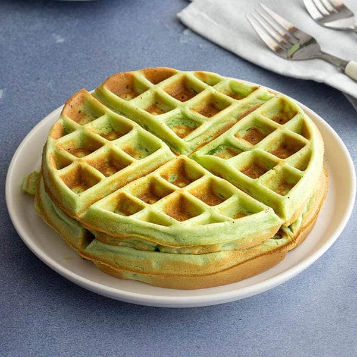

Pandan Waffle

Tired of eating regular waffles? Try out Vietnamese Pandan Waffles (Bánh Kẹp Lá Dứa). A green coconut waffle that will make you crave for more!
Pandan is with tapioca starch, rice flour and all-purpose flour that gives a nice chewy texture to the waffle. All you need is a waffle iron and a few ingredients!
Ingredients
- 2 cups premix pancake flour
- 1 egg
- 1 and 1/2 cups coconut milk
- 2 tablespoons vegetable oil with additional 1 tablespoon for greasing waffle iron
- 1/3 cup granulated white sugar
- 1/2 teaspoon pandan extract
- 1/4 cup unsweetened shredded coconuts
Steps
- In a large bowl, mix together premix pancake flour, egg, coconut milk, vegetable oil, sugar and pandan extract until smooth. Mix in shredded coconuts until combined.
- Preheat and grease waffke iron with vegetable oil
- Place about 1/3 to 1/2 cup of the batter onto the preheated waffle iron. Close the lid and cook about 2-3 minutes until little to no steam from waffle iron
- Serve in a plate and enjoy!
Home